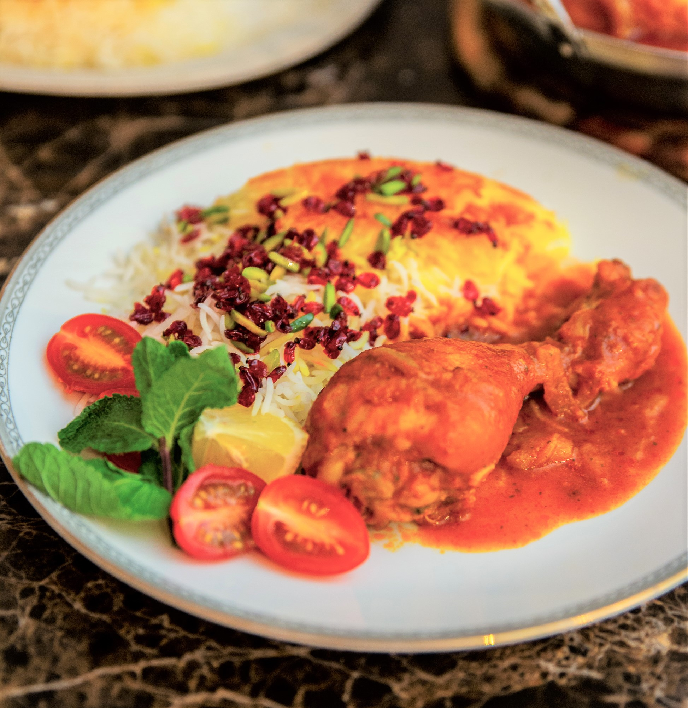

Zereshk Polo Ba Morgh
INGREDIENTS
- 8 skinless chicken thighs, or drumsticks (about 3 pounds)
- 1 tsp turmeric
- 1 tsp salt
- ¾ tsp black pepper
- 1 large onion cut in half
- 3 cups water
- ⅛ tsp ground saffron powder (optional
- 1 medium yellow onion, sliced thin and fried to golden brown in 2 TBSP vegetable oil (or
3 ounces fried onions)
- 2 TBSP tomato paste
- 2 TBSP fresh squeezed lemon juice
- 1 TBSP zereshk (pick through, wash and rinse)
FOR THE ZERESHK POLO:
- ⅓ cup zereshk, (pick through, wash and rinse)
Pinch of ground saffron powder, optional

INSTRUCTIONS
- In a large 12-inch skillet (with a lid) add the chicken thighs (bone side down), turmeric, salt,
pepper, onion halves and 3 cups of cold water. Without covering the skillet, bring it to a boil
over medium high so all the foam from cooking the raw chicken rises to the top. Use a slotted
spoon to skim off the foam. Reduce the heat to medium low, cover the skillet and cook for 30
minutes, then turn the chicken pieces and cook for another 30 minutes on medium low.
- hirty minutes into cooking the chicken, start making the rice according to the instructions for
Aromatic rice.
- In a medium skillet fry the sliced medium onion in 2 tablespoons vegetable oil until golden
brown. Add the tomato paste and sauté until aromatic. Set aside.
- When the chicken is fork tender, discard the onion halves. Turn the chicken pieces one more time
(now the meaty part of the chicken will be up) and sprinkle the optional ground saffron powder
on the pieces. Use the back of a spoon to rub the saffron on the surface of each piece. This
simple added step adds a very rich color to the chicken pieces.
- Make the tomato sauce in the same skillet by mixing in the prepared fried onion and tomato paste
with the broth. Add 2 tablespoons fresh squeezed lemon juice and 1 tablespoon zereshk to the
sauce. Bring it to a boil over medium heat and then reduce the heat to medium low, cover the
skillet and cook for 15-20 minutes, then turn the chicken pieces and cook for another 15-20
minutes.
- At the end of this cooking time the chicken should easily come apart with a fork. The sauce will
be reduced and a glistening oil will rise to the top, or as we say in Farsi, “ja biofteh” which
roughly means “to settle.” If there is too much sauce left in the skillet, remove the lid and
cook for a few more minutes until it is reduced.
- To make the zereshk/fried onion mix: In the same skillet that you've fried the diced onion, add
⅓ cup barberries and a pinch of optional saffron and saute over low for couple of minutes until
the zereshk plumps up. Zereshk burns very quickly so keep the temperature very low.
- For the layered presentation of Zereshk Polo: Use a large spatula to transfer ⅓ of the steamed
Aromatic rice to the serving platter, top with ⅓ of the barberry/fried onion mixture and
continue layering and finish the top with the remaining zereshk/fried onion. Garnish with sliced
almonds and/or pistachios.
- Serve the chicken on a separate platter.